My Favorite Works
Publication (Recent & Selected)The titles below may not be exactly the same as in the papers. They are used in order to highlight the key ideas/contributions. Click [more] for details of the paper. Click [paper] to download the PDF right away. Click [video] for the high-quality project video. For moderate quality video on youtube, please click [youtube]. Click [software] for the associated software. Click [press] for related press clipping.
Full Publication by Year
|
ToonCrafter: Generative Cartoon Interpolation
(SIGGRAPH Asia 2024) After decades of searching generic solution for cartoon inbetweening 😭, it seems we are one more step closer to the ultimate solution. The idea is to exploit the motion priors of video diffusion model. Comparing to the costly handdrawn cartoon animation, live-action videos are cheaper to acquire and richer in all kinds of motion. This means it is more sensible to adapt a live-action video trained model (DynamiCrafter in our case) for cartoon interpolation, than training one from scratch. The key challenge is how to adapt to the visual appearance of cartoons (without generating non-cartoon content) while retaining the motion. [more] [paper] [code] |
|
DynamiCrafter: Animating Images with Video Diffusion Priors
(ECCV 2024) There has long been a need to animate images, but early works are limited to animating specific types of motion, such as water or candlelight. However, animating the general motion of an arbitrary image remains an open problem. By utilizing motion priors of a text-to-video diffusion model, we now can animate any still picture with realistic and natural motion. [more] [paper] [code] |

|
Text-Guided Texturing by Synchronized Multi-View Diffusion
(SIGGRAPH Asia 2024) Texturing a mesh could be very tedious and labor intensive. There is nothing better than dressing an object by simply typing a few words. By utilizing the image prior of a pretrained text-to-image diffusion model, we can synthesize high-quality textures for any given object mesh. The key challenge lies on how to produce a high-quality 360°-complete, consistent and plausible textures, without over-fragmentation, obvious seams, and over-blurriness. The proposed synchronized multi-view diffusion allows faster convergence during the denoising process. [more] [paper] [code] |

|
Physics-based Scene Layout Generation from Human Motion (SIGGRAPH 2024) As character motion is often captured in a blue-screened studio without real furniture or objects in place,, there may be a discrepancy between the planned motion and the captured one. Hence, the scene/furniture may have to be adjusted accordingly. Given a character motion, our method selects the approprate furnitures from a library to fit the motion in a physically plausible fashion. The scene layout is simultaneously optimized with the physics based motion simulation to determine the optimal scene layout. [more] [paper] [code] |
|
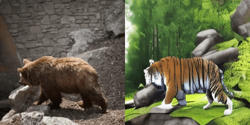 |
Make-Your-Video
(IEEE TVCG 2024)
Make-Your-Video takes an input depth video or normal video (hence, estimated depth)
and the user' text description as guidiances,
to generate the desired video.
It can significantly improve the temporal consistency while
maintain the visual quality of the generated video.
|
|
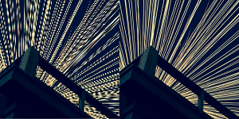 |
Scale-Arbitrary Invertible Image Downscaling
(IEEE TIP 2023)
Have you ever complained your image being degraded after posting over
whatsapp, telegram, or facebook? This is because social media platforms
usually scale down your image if its resolution is too large. Here,
we provide a solution of encoding arbitrary high-resolution image details into the
low-resolution ones, so that after posting the low-resolution images
on these social media platforms, we can still restore the high-resolution
images and their details. Obviously, this technology can also be
adopted by the social media platforms, to retain the high-resolution
details of users' images without paying extra storage cost.
|
|
|
CodeTalker: Speech-Driven 3D Facial Animation
(CVPR 2023)
While speech-driven 3D facial animation has been heavily studied, there remains
a gap to achieving expressive and dramatic animation, due to the highly ill-posed
nature and scarcity of audiovisual data. The unique contribution here is on
minimizing the over-smoothed facial expression using a learned discrete
motion prior, which means more dramatic and expressive facial motions with
more accurate lip movements can be achieved. Such method is not only useful in virtual reality,
games and film productions, but also is beneficial to general non-professional users
without much animation skill.
|
|
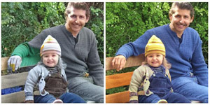 |
Disentangled Image Colorization
(SIGGRAPH Asia 2022)
Existing neural-based colorization methods usually fail to consistently colorize, e.g. the dress of a
person. The typical result is the dress is partly in green and partly in gray
even the grayscale dress looks like in the same color. The core of the
problem lies on the difficulty in maintaining the long-distance color
consistency for region that can be colorized in "any" color. To ease the learning, we propose to disentangle the color
multimoality from the structure consistency. So that, a person wearing the
single color dress will be colorized in single color.
|
|
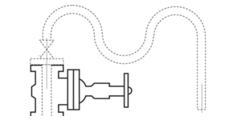 |
Dashed Curves Vectorization
(CVPR 2022)
Dashed lines/curves vectorization has never been successfully handled so
far. We take one step further to vectorize dashed curves using an end-to-end neural
approach. Instead of exporting multiple disjoint line segments, we can export a
semantic meaningful vectorized curve that connects all involved dashes. Even the raster input contains multiple intersecting dashed curves,
we are able to identify them correctly and individually.
|
|
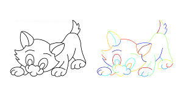 |
End-to-End Line Drawing Vectorization
(AAAI 2022)
Line vectorization has long been an open problem. Many approaches have been
proposed, and they usually involve multiple steps that may be proned to
input violating the assumptions. In this project, we propose a neural model
that can take arbitrary line drawing as input and directly export vectorized
output, without the hassles of unstable intermediate steps.
|
|
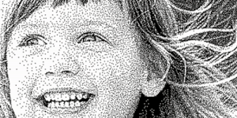 |
Invertible Halftoning
(ICCV 2021)
Once we can store color information in grayscale, the next step is to store
it in halftone. This problem is much harder because of the drastically reduced
solution space of bitonal image (1 bit per pixel). Besides storing the color
information, the binary pattern also serves to preserve the orginal
structural content while avoid to introduce extra visual pattern (blue-noise
property). Also, convolutional neural networks is not good in generating
binary pattern. See how we solve it.
|
|
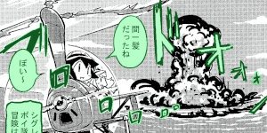 |
Manga Inpainting
(SIGGRAPH 2021)
Manga inpainting has long been needed by the industry during the localization
and the conversion to electronic manga. But it is mostly done by hand, due to
the semantically poor and seam-obvious inpainting results of existing
methods. We proposed the first effective deep learning based method for manga
inpainting that produces semantically meaningful and screentone seamless
results. Thanks to our previous screenVAE feature, we can avoid the confusion caused by
the screentone. |
|
|
Exploiting Alaising for Manga Restoration
(CVPR 2021)
Manga images available on the net are usually contaminated with aliasing artifact due
to the undersampling during the scanning. This is especially true for
manga, as regular patterns (screentones) are oftenly presented in manga.
In fact, such undesired artifact can be exploited as
a clue to determine the optimal resolution for restoring (superresolving) the
manga.
|
|
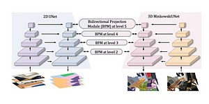 |
Bidirectional Projection Network
(CVPR 2021)
Existing segmentation methods are mostly unidirectional, i.e. utilizing 3D
for 2D segmentation or vice versa. Obviously 2D and 3D information can
nicely complement each other in both directions, during the segmentation. This is the goal of
bidirectional projection network.
|
|
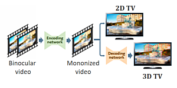 |
Mononizing Binocular Videos
(SIGGRAPH Asia 2020)
Here we present a fully backward compatible solution to represent a
binocular video as an ordinary monocular video. So that, it can be played
back, compressed with standard video codec, transmitted, just like any
ordinary monocular video. The only uniqueness is that it can also be
optionally restored back to its original binocular form, whenever
stereoscopic playback is needed. We achieved this by employing the
InvertibleX Model. In addition, compressing our mononized
video even outperforms the state-of-the-art multiview video encoding.
|
|
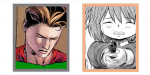 |
Manga Filling with ScreenVAE
(SIGGRAPH Asia 2020)
While automatic converting color comic to screened manga is doable, translating a bitonal
screened manga to color comic is never done automatically before. The major
bottleneck lies on the fundamental difference in characterizing how a region
is filled. While a color can be characterized at a single point, a screentone has
to be characterized by a region. To enable the effective automatic
transation between the color comic and the screened manga, we propose to
unify such fundamental difference, by introducing an intermediate
representation, ScreenVAE map, which converts the region-wise screentone to
a point-wise representation.
|
|
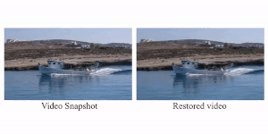 |
Video Snapshot (a real live photo)
(IEEE TPAMI 2021)
While iPhone keeps a short video for each "live photo", we propose a method to
embed a short video into a single frame, in other words, a real live photo. We employ
the InvertibleX Model to first encode the neighboring frames into a
single visualizable frame. Whenever the video is needed, a decoding subnetwork
can be used to expand (restore) it.
|
|
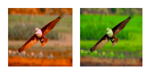 |
Color-Consistent and Temporal-Coherent Colorblind-Shareable Videos
(SIGGRAPH Asia 2019)
Due to the local nature of CNN models, it is hard to ensure the recoloring is
consistent over the whole image. To solve this problem in our synthesis of
colorblind-shareable videos, we propose to utilize deep learning in
indirectly generating parameters of a polynomial color model. This
guarantees the recoloring is globally applied to the whole image, while
ensuring temporal coherent.
|
|
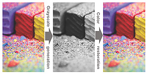 |
Invertible Grayscale
(SIGGRAPH Asia 2018)
Here we present a method to convert arbitrary color images to grayscale.
That is not interesting, of course. The interesting part is that such
grayscale images can be inverted back to color images accurately, without
any guessing. We present a
learning-based model that offers such color-to-gray conversion
and grayscale-to-color restoration abilities. This is the first realization
of the Invertible Generative Model.
|
|
|
Two-Stage Sketch Colorization
(SIGGRAPH Asia 2018)
With the advances of neural networks, automatic or semi-automatic
colorization of sketch become feasible and practical. We present a
state-of-the-art semi-automatic (as well as automatic) colorization from
line art. Our improvement is accounted by a divide-and-conquer scheme. We
divide this complex colorization task into two simplier and goal-clearer
subtasks, drafting and refinement.
|
|
|
Deep Unsupervised Pixelization
(SIGGRAPH Asia 2018)
Generating pixel art from a given input can be regarded as a kind of style
transfer, and seems to be solvable with existing deep learning. But the
real difficulty is the lack of supervised data (thousands of image
pairs of high-resolution input and low-resolution pixel art). This is why we
need an unsupervised learning framework for this pixelization goal.
|
|
|
Deep Extraction of Manga Structural Lines
(SIGGRAPH 2017)
Removal of problematic screentone from manga has long been an open problem but
strongly needed, as the digitization process can be significantly simpilified. It is
until the mature of deep learning, we finally be able to remove the irregular,
regular, arbitrarily scaled, or even pictorial screentones with a single unified solution.
|
|
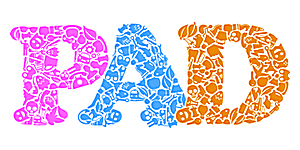 |
Pyramid of Arclength Descriptor (PAD)
(SIGGRAPH Asia 2016)
We started with a simple goal, filling space with shapes to exhibit strong
intercoupling appearance, like what M.C. Escher did. But it turns out to be so hard to be practical (tiling
arbitrary shapes within a tractable time). After a decade of research, our
solution is a brand new shape descriptor. It is locally supported,
scale invaraint, suits for partial-shape matching, and more
importantly, efficient to be practical. It will be very useful for many shape recognition problems.
|
|
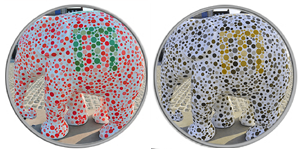 |
Visual Sharing with Colorblinds
(SIGGRAPH 2016)
Modern TV are not designed for colorblinds, leading them hard to share the
same TV with families with normal vision. We propose the first method to
allow colorblinds and normal vision audiences to seamlessly share the same
display, thanks to the wide availability of binocular TV.
|
|
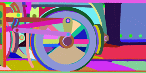 |
Globally Optimal Toon Tracking
(SIGGRAPH 2016)
Tracking the corresponding regions throughout a cartoon sequence is
necessary in postprocessing, such as colorization and stereoscopization.
But it is not available from animators and vision technqiues do not work
well for cartoons. By formulating the region tracking as a global
optimatization problem and model the region motion trajectory, we can
significantly raise the accuracy to a usable level. |
|
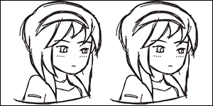 |
Closure-aware Sketch Simplification
(SIGGRAPH Asia 2015)
Existing methods in simplifying a sketch mainly consider the distance and
orientation similarities of strokes. Thresholding on them usually results in
unsatisfactory simplifcation. In fact, humans also rely on
the depicting regions in understanding whether individual strokes are
semantically refering the same stroke. But regions are formed by strokes,
and strokes are interpreted by regions. See how we solve the
chicken-or-the-egg problem, by considering the closure gestalts.
|
|
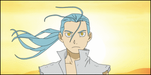 |
Stereoscopizing Cel Animations
(SIGGRAPH Asia 2013)
While 3D movies are popular nowadays, it is impractical for cel
animators to hand-draw stereo frames. Geometry modeling cartoon characters
not only costly, but also requires highly trained skill for lively and
"organic" presentation of cartoon characters. It would be the best if
cel animators remains hand-draw their monocular cels, while leaves our
system to automatically turn the cel animations into stereo.
|
 |
Binocular Tone Mapping
(SIGGRAPH 2012)
Tone mapping usually faces a dilemma of looking flat or loosing details. But
what happen if we are given two display domains as in binocular display? We
can present both detail and high-contrast content. The question is whether
these two views can be stably fused into a single percept. This project
proposes a metric to predict such fusability.
|
|
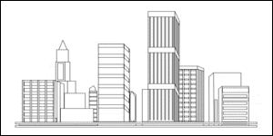 |
Conjoining Gestalt Rules
(SIGGRAPH Asia 2011)
Gestalt laws describe the phenomena of how we humans recognize forms
(objects), instead of a set of unrelated fragments. By explicitly modeling
the Gestalt phenomena and their complicated interaction, we are able
to mimic how humans recognize forms/gestalts. This is a step
forward to high-level semantic understanding. Interestingly, such
interpretation is highly related to how artists abstract/simplify the
image content.
|
 |
Making Burr Puzzles from 3D Models
(SIGGRAPH 2011)
Burr puzzles have a long history and highly related to anicent Asian
architecture. Without any screw, burr puzzle pieces can interlock
each other firmly. Existing burr puzzles usually have more or less
similar and boring appearance due to the complexity in designing
puzzle pieces. In this project, we propose a method to break a given
3D model into burr puzzle pieces. User can control the complexity of
resultant puzzle by controlling the number of "knots" introduced
into the model volume. We also show the rapid prototype pieces.
|
|
|
Resizing by Symmetry-Summarization
(SIGGRAPH Asia 2010)
By understanding the high-level semantics in the image, resizing can be
done in a semantically meaningful manner. So we propose to analyze the
symmetry in the image and then summarize the symmetric patterns in
order to achieve retargeting. This open a new space for resizing as we can
now reduce/insert image content in a cellwise fashion.
|
|
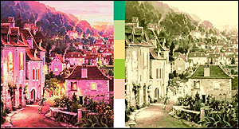 |
Data-Driven Image Color Theme Enhancement
(SIGGRAPH Asia 2010)
Modifying the color theme of a given image is desirable in many
applications. However, it is not trivial as images may not be cartoon-like
(regions of same and clear colors). Here we suggest a way to recolor the
images based on a database and user scribbles. It tries to optimize a result
that confirms to the desired color theme (specified by a
mood/emotion tag), texture, and user constraint.
|
|
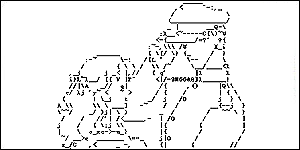 |
Structure-based ASCII Art
(SIGGRAPH 2010)
It seems that ASCII art has no
market value with the wide availability of digital images.
Instead, ASCII art becomes even more popular and trendy with
the growth of the text-based communication channels,
such as SMS and instant messenger. But current ASCII art generation
is not satisfactory due to its dithering nature. We propose a method
to generate structure-based ASCII art that mimics the
structure of image content with the structure of
characters.
|
|
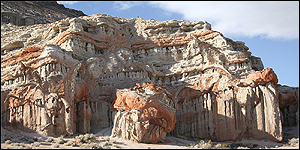 |
Camouflage Images
(SIGGRAPH 2010)
Camouflage images are manually created by artists. They intelligently fool
our human visual perception in acquiring the embedded figure by busy
texture details. We present a technique that mimics such process to
generate camouflage images. The importance of this work is not only the
generated images, but more importanly, we explore one dimension of our human
vision.
|
|
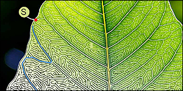 |
Evolving Mazes from Images
(IEEE TVCG 2010)
In daily newspapers and magazines, it is not difficult to find designed
mazes for readers amusement. Many of these mazes mimic photos, e.g. scenic
pyramid, animals, plants, etc. Obviously, they are manually designed. In
this fun project, we turn a given image into a solveable maze
automatically, by evolving (not designing) the images into
mazes. It preserves the salient main structure in the original photos, so
we can still recognize the underlying photos of the mazes.
|
|
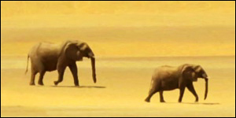 |
Animating Animal Motion from Still
(SIGGRAPH Asia 2008)
Given a single image of animal group, can we animate them without knowing
how these animals move in prior? In fact, the snapshots of individuals
embed the "keyframes" of their motion cycle. We developed a way to
determine the ordering of motion snapshots, so that we can animate the
motion by morphing.
|
|
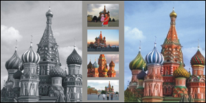 |
Intrinsic Colorization
(SIGGRAPH Asia 2008)
Traditional colorization directly colorizes on the image without
considering the effects of illumination (shadowing and highlight).
We demonstrate that such treatment may significantly harm the
result. By taking away the illumination and performing the
colorization in an intrinsic domain, the interference of
illumination can be correctly accounted. To do so, we take advantage
of the vast amount of images available on the internet.
|
|
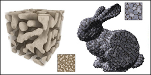 |
Solid Texture Synthesis from 2D Exemplars
(SIGGRAPH 2007)
Solid texturing has been referred as a solution to texturing
without distortion and discontinuity for many years. But the
difficulties of obtaining 3D textures has not be eased for many
years too. It would be perfect if we can just take 2D photo and
create the similar 3D solid from it. This is exactly what we do.
|
|
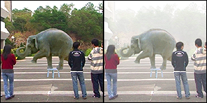 |
Refilming with Depth-inferred Videos
(IEEE TVCG 2009)
Movie special effects (e.g. bullet time) normally cost
multi-million dollars to achieve. Can homeusers do that with a single
low-cost digital video recorder? We developed an approach to do that,
by first estimating the high-quality per-frame depth maps
from an ordinary video captured with a handheld camera. Then we can
manipulate the depth-inferred video to achieve several special effects
on personal computers, like bullet-time, fogging, predator effect, and
depth-of-view. |
Computational Manga
|
|
Richness-Preserving Manga Screening
(SIGGRAPH Asia 2008)
Manga artists draw manga based on real photographs, but unfortunately by
hand. We present a method to generate mangas from color photographs by
maintaining the color-distinguishability, texture and tone. As
screen patterns offer much variety than bitone, why don't we make better
use of patterns during color-to-bitone conversion? We try to screen red
and orange regions with similar patterns, while red and blue regions with
less similar patterns. This is what we mean color-distinguisability.
|
|
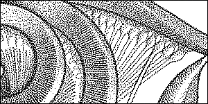
|
Structure-Aware Halftoning
(SIGGRAPH 2008)
Existing halftoning techniques mainly focus on tone reproduction and
annoying pattern avoidance. Visually sensitive fine details are usually
lost during the halftoning. We developed an optimization-based halftoning
method that can preserve the fine texture as well as the tone similarity.
|

|
Self-Animating Images
(SIGGRAPH 2008)
When certain combination of colors and patterns are used in an
image, our human vision system perceives illusion of motion even the
image is static. Based on the limited knowledge of this phenomenon,
we design algorithms to strengthen the illusory effect of motion given
an input image. Such illusion can be utilized in artwork and design.
|
|
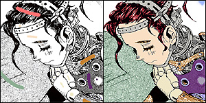 © Yukito Kishiro / Shueisha |
Manga Colorization
(SIGGRAPH 2006)
The widely popular Japanese manga arts is usually presented in B/W. Its
intensive use of hatching and screening is a distinctive characteristic,
but also imposes many difficulties in its digital colorization. Unlike the
previous colorization methods that rely on intensity-continuity. This
paper presents a colorization technique that relies on the
pattern-continuity as well as the intensity-continuity. Hence it can
naturally colorize the pattern-intensive manga. |
| 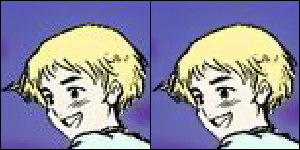 |
Cartoon Deringing
(ACM TOG 2006)
Existing manga (or anime) are normally stored as JPEG (or MPEG). However,
such BDCT encoding is not suitable for images with sharp edges, like
manga/anime. Images are usually contaminated with annoying visual
artifact. This paper presents an analogy-based deringing method to
synthesize artifact-reduced images instead of traditional
postfiltering approaches. Substantially visual and statistical
improvements over existing methods are obtained.
|
| 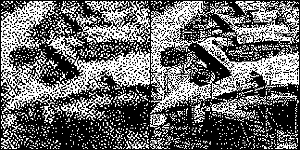 |
Details-Preserving Halftoning
(Graphics Gems V, 1995)
Halftoning is heavily used in printing
industry. Classical methods usually exhibit observable patterns. Here, we
make use of the space-filling curves to avoid such pattern. The
space-filling curve turns a 2D problem into 1D. Hence 1D signal processing
techniques can be easily and efficiently applied to retain the details in
the original grayscale input. |
Weathering
| 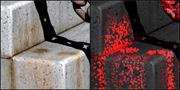 |
ɣ-ton Tracing
(SIGGRAPH 2005)
ɣ-ton tracing is a visual simulation framework for a wide variety of
weathering effects. In this framework, blemishes (e.g. rust, stain,
patina, etc) are formed by the cumulative propagation of an abstract
weathering-catalysing agent called ɣ-ton. The propagation of
ɣ-ton resembles the photon mapping. Therefore, once you know how to
do photon mapping, you can simulate weathering.
|
| 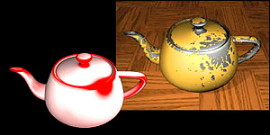 |
Geometry-Dependent Surface Imperfections
(EGWR 1997)
The stochastic patterns of real-world weathering phenomena are usually
geometry-dependent. Example geometric factors include surface exposure,
curvature, and external weathering sources (just like the light sources).
By first determining the underlying tendency from
scene geometry, we can simulate a wide variety of weathering phenomena.
|

|
Dust Accumulation
(IEEE CGA 1995)
Although weathering phenomena seems to be stochastic, its underlying
pattern is systematic. Through this specific simulation of dust
accumulation, we demonstrate the weathering pattern is highly related
to geometric factor like surface exposure. Here you
find the first ambient occlusion (at that time, I called it
surface exposure).
|
Sphere Map
| 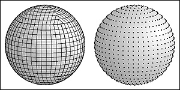 |
Isocube
(IEEE TVCG 2007)
The six-face cubemap is widely equipped on GPU. But the cubemap does not
sample the sphere uniformly and each texel does not bear the same weight
(solid angle). Here we propose a new sphere partitioning and sampling
scheme that gives uniform sampling (low discrepancy) and equal
solid-angle properties. Moreover, it fits nicely in the six-face cubemap
hardware and hence it can steal the hardware antialiasing features of
cubemap.
|
| 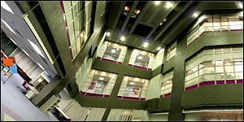 |
Rhombic Dodecahedron Map
(IEEE TMM 2009)
This proposed rhombic dodecahedron map partitions the sphere into
12 equal base faces (rhombi, equal in shape and solid angle).
Although the partitioned texels on each base face may not have the
same solid angle (but very close), this allows us to trade for
uniformity in shape distortion, that cannot be maintained in
isocube and HEALPix.
|
| 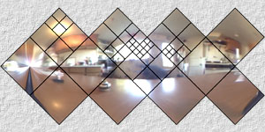 |
Spherical Q2-tree (EGSR 2005)
To speed up the rendering, we can approximate the distant envrionment
lighting by a finite number of directional lights. The question is how to
sample the spherical environment map. By developing the 360 degree
environment onto a plane with solid angle equality, we then turn the
importance sampling problem into a simple quad-tree partitioning problem
on sphere. |
| 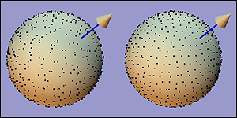 |
Hammersley and Halton Points
(JGT 1997)
With a set of simple equations, we can generate uniformly distributed
(low-discrepancy) but deterministic sample points over the spherical
surface. The total number of sample points can be arbitrarily specified.
All these features make it a neat and handy tool for sphere sampling.
|
Relighting and Precomputed Lighting
| 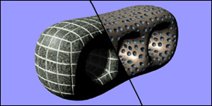 |
Tileable BTF
(IEEE TVCG 2007)
Dressing an object with BTF normally involves a geometry-dependent
synthesis. The synthesized BTF cannot be reused on another object. Since
the synthesis of high-dimensional BTF is very time-consuming, this hinders
the application of BTF. We proposed the tileable BTF to decouple the BTF
synthesis and the geometry. Hence, once a set of BTF tiles is synthesized,
it can be repeatedly applied on various objects without the lengthy
synthesis. The dressing is instantaneous. |
| 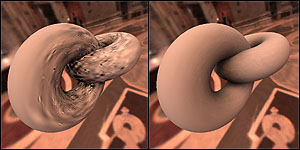 |
Noise-Proofed SH
(IEEE TVCG 2006)
Storing precomputed lighting information (such as relighting, BTF, and
PRT) with spherical harmonics (SH) can drastically reduce the data size.
However, that is still far away from practical use as each vertex or pixel
has its own SH coefficient vector (of, say, 25 x 25 elements). Further
compression on these SH coefficients may carelessly introduce severe
visual artifacts. We digged up the underlying reason and introduced a way
to noise-proof the SH coefficients, hence practical applications
become feasible. |
| 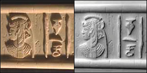 |
Dense Photometric Stereo
(IEEE TPAMI)
Given the massive number of images captured for relighting, we can
accurately recover the normal and depth maps using dense photometric
stereo. Recovery is accurate even the lighting direction is not
precisely measured and there are substantial amount of shadow and specular
highlight (which causes much troubles to traditional shape recovery
algorithms). Note that the same set of images is used for depth
recovery and relighting. No range scanner is required. |
| 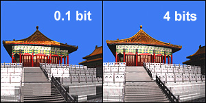 |
PCA Compression for Relighting
(IEEE CSVT 2005)
Previous methods in compression relighting data mostly rely on SH which may
smooth out high-frequency details. Here, we propose a block-based PCA
compression scheme. It essentially separates the data into basis images and
relighting coefficients, which can be further effectively compressed using
transform coding and quantization. The nice feature of PCA is its ability in
preserving high-quality shadow and highlights, while maintaining high
compression ratio and fast rendering.
|
| 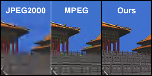 |
Compression for Relighting
(IEEE CSVT 2003)
Relighting or precomputed lighting is actually a compression problem of
tons of images. One may straightforwardly compress them with image or
video compression standards such as JPEG, JPEG2000 and MPEG. However, they
do not work well nor fully exploit the data correlation. Unlike the
frame-by-frame playback of video, relighting may randomly access the
pixel values during image synthesis. This paper presents a
divide-and-conquer compression approach which substantially outperforms
existing image and video coding methods. |
| 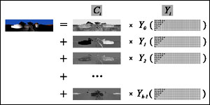 |
Real-Time Relighting
(Graphics Programming Method 2003)
Relighting in local illumination (directional and point light sources) is
basically a linear combination of basis functions, either image-wise or
pixel-wise. The grid nature of image-based relighting fits nicely into the
current SIMD-based GPUs and facilitates its real-time rendering.
However, SH imposes difficulties due to its recursive definition. To solve
it, we utilize hardware cubemaps.
|
| 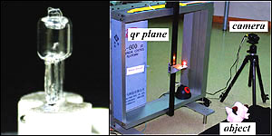 |
Sampling Bound of Relighting
(CVPR 2001) (IJCV 2002)
How many samples we should take along the lighting dimension in order to
synthesize realistic images? If we know the answer, we can avoid wasteful
oversampling and undesirable undersampling, during the relighting and
precomputed lighting. This is exactly what this paper trying to answer. We
went through an indepth analysis and obtained the theoretical sampling
bound for relighting and precomputed lighting. To verify our bound, we
even build a machine to precisely position the point light source. |
| 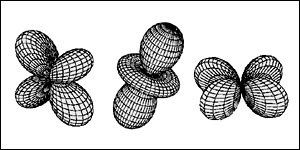 |
The Plenoptic Illumination Function
(IEEE TMM 2002)
The original formulation of the plenoptic function does not include
illumination. Previous image-based virtual reality applications simply
assume that the illumination is fixed. In this paper, we proposed a new
formulation of the plenoptic function, called the plenoptic illumination
function, which explicitly specifies the illumination component.
Techniques based on this new formulation can be extended to support
relighting as well as view interpolation. This paper received the IEEE
Transactions on Multimedia Prize Paper Award 2005. |
|
ABRDF and Image-based Relighting
(EGWR 1997)
The earliest paper on image-based relighting from our group in 1997. We
attempted to include the lighting into the image-based rendering framework.
So that we are able to change the viewpoint as well as the lighting.
Our work is later commonly referred as image-based
relighting. In this paper, we introduced the concept of
apparent BRDF (ABRDF) of pixel, which is the aggregate function
of surface reflectance, shadowing, and other indirect illumination
contribution.
|
View Interpolation
|
Binary-Space-Partitioned Images (IEEE TVCG 2004)
Can we resolve the visibility without
referring to 3D? This paper tries to answer this question. By binary-space
partitioning the input 2D image and projecting the novel viewpoint onto the
view plane of the input image, novel views can be generated. The 3D
visibility can be correctly and completely resolved in 2D. All we need is a
2D BSP visibility sorting. |
|
View Interpolation Without Depth-Buffering
(JGT 1998)
Using epipolar geometry, a visibility-correct drawing order of pixels
can be derived without depth-buffering. The drawback is to do it
pixel-by-pixel. Again, using epipolar geometry, we derive a
visibility-correct drawing order for 2D triangles. The order between
each pair of neighboring triangles is first obtained. Then a graph can be
built and topological sorting is applied on the graph to obtain the complete
drawing order of all triangles in linear time.
|
GPGPU
|
DWT on GPU
(IEEE TMM 2007)
Discrete wavelet transform (DWT) has been widely used in recent years,
e.g. JPEG2000 image coding standard. But DWT is rather computational
intensive when the data size is large. Since most PCs come with a GPU, why
don't we turn it into a powerful DWT engine? As there are many DWTs, we
proposed a method to support various separable DWTs with various boundary
extension schemes. This project started in 2003 and its source
code has been released since 2004. |
|
Evolutionary Computing on GPU
(IEEE IS)
Genetic algorithm is a kind of evolutionary algorithms. Evolutionary
algorithms are effective and robust methods for solving many practical
problems such as feature selection, electrical circuits synthesis, and data
mining. However, they may execute for a long time, because enormous fitness
evaluations must be performed. In this paper, we proposed the first
evolutionary algorithm on GPU, affordable by most people. |
Visualization
|
Adaptive Skeleton Climbing
(Eurographics 1998)
Generating isosurfaces from volume data
normally results in large amount of triangles. One can use post-processing
mesh decimation technique to reduce the triangle count, but with the
trade-off of long processing time. To address this problem, we proposed an
isosurface extraction algorithm that generates decimated mesh
directly from the volume in a short period of running time.
|